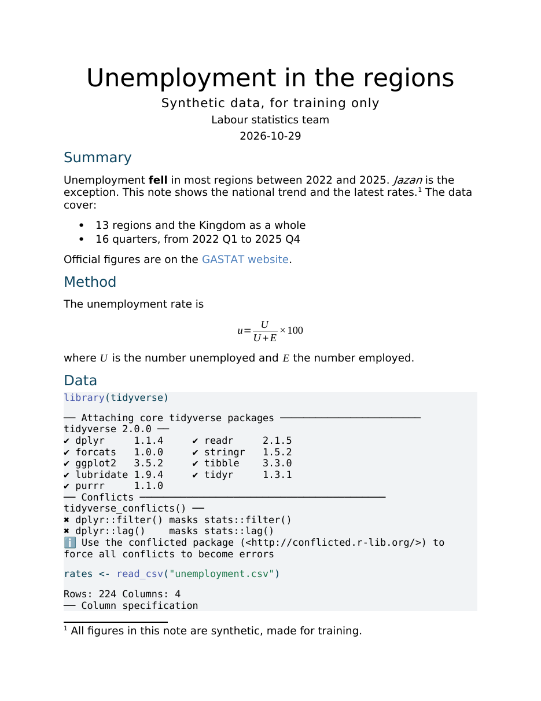
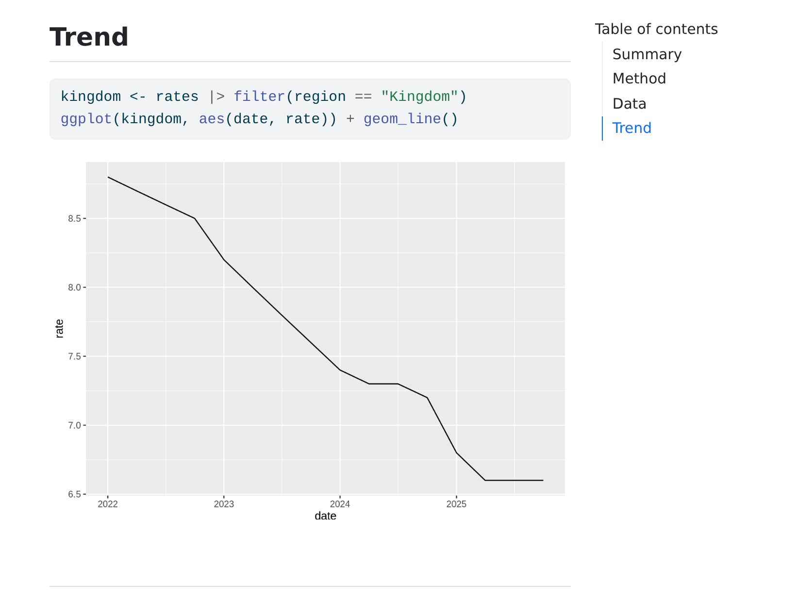
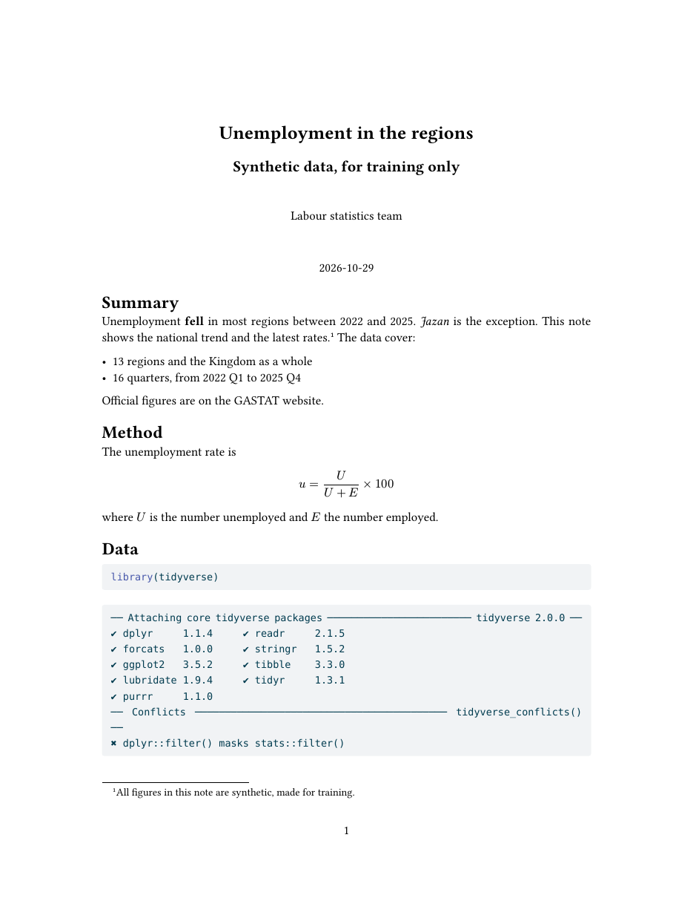

report.docx

processing file: report.qmd output file: report.knit.md pandoc to: html output-file: report.html Output created: report.html
## Data ::: {.cell} ```{.r .cell-code} library(tidyverse) ``` ::: {.cell-output .cell-output-stderr} ``` ── Attaching core tidyverse packages ──────────────────────── tidyverse 2.0.0 ── ✔ dplyr 1.1.4 ✔ readr 2.1.5 ✔ forcats 1.0.0 ✔ stringr 1.5.2 ✔ ggplot2 3.5.2 ✔ tibble 3.3.0 ✔ lubridate 1.9.4 ✔ tidyr 1.3.1
</section> <section id="trend" class="level2"> <h2 class="anchored" data-anchor-id="trend">Trend</h2> <div class="cell"> <div class="code-copy-outer-scaffold"><div class="sourceCode cell-code" id="cb7"><pre class="sourceCode r code-with-copy"><code class="sourc … <span id="cb7-2"><a href="#cb7-2" aria-hidden="true" tabindex="-1"></a><span class="fu">ggplot</span>(kingdom, <span class="fu">aes</span>(d … <div class="cell-output-display"> <div> <figure class="figure"> <p><img role="img" src="data:image/png;base64,iVBORw0KGgoAAAANSUhEUgAABUAAAAPACAMAAADDuCPrAAADAFBMVEUAAAABAQECAgIDAwMEBAQFBQUGBgYHBwcICAgJCQ … </figure> </div> </div> </div>



keep-md: true يُبقي لنا الملف اللي يكتبه Quarto في منتصف الطريق، عشان نفتحه ونشوف ما فيه.embed-resources حتى الرسم ينحزم داخله، على شكل سطر نص طويل جدًا.